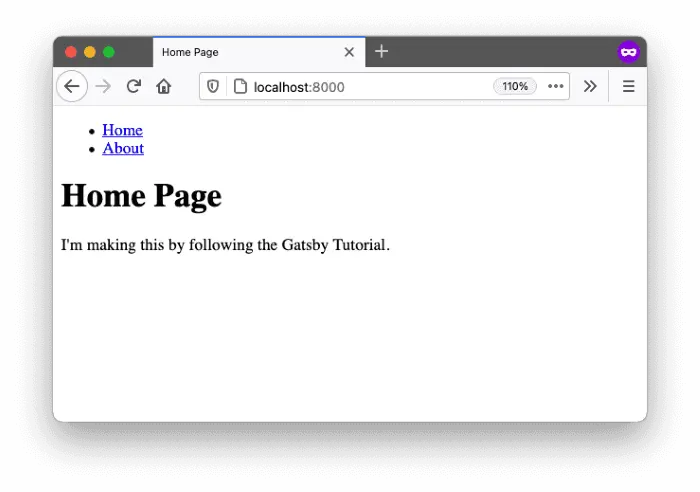
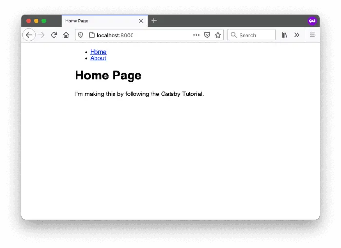

Lecture 4
- Frameworks
- Getting Started with Gatsby
- Structure of a Gatsby Project
- Creating a Page
- Linking the Pages
- Create a Shared Layout
- Style with Sass using Gatsby Plugin
- Adding MDX Support
- Adding a TOC using GraphQL
- Modify the Rendering of MDX
- Using Component in MDX
- More in Gatsby
Frameworks
-
In the previous lectures, we’ve seen the evolution of the web technologies, from native HTML to CSS and JavaScript to Node.js, TypeScript, and React. But the evolution is still going on, and new technologies are being developed every day.
-
Besides React, there are many other popular frameworks, such as Angular, Vue.js, and Svelte.
-
Based on React, there are also many topper frameworks, such as Next.js, Gatsby. Gatsby is specialized in static site generation, which means it will compile the whole project locally into native HTML, CSS, and JavaScript files, and then deploy (upload) them to a server. This is the reason why we choose Gatsby for this course. It just fits the needs of building a iGEM wiki website.
Getting Started with Gatsby
- The Gatsby command line interface (CLI) is a tool that lets us quickly create new Gatsby-powered sites and run commands for developing Gatsby sites, we can install it using npm.
pnpm install -g gatsby-cli - To create a new Gatsby site, we can run the following command:
gatsby newWe will choose Sass, Typescript as the initial options.
- After
gatsby-clihas finished creating the project, we can navigate to the project folder and run the following command to switch topnpm:cd gatsby-iweb rm -rf node_modules package-lock.json pnpm install pnpm upgrade - To start the development server, we can run the following command:
gatsby developThe development server will start at
http://localhost:8000/. We can open this URL in a web browser to see the site:
Structure of a Gatsby Project
- A Gatsby project has a similar structure to a React project, but with some additional files and folders. The following is the structure of a Gatsby project:
. ├── .cache ├── .gitignore ├── README.md ├── gatsby-config.ts ├── node_modules │ ├── @babel │ ├── @types │ ├── @typescript-eslint | ... │ └── gatsby ├── package.json ├── pnpm-lock.yaml ├── public │ ├── page-data │ ├── static │ └── ~partytown ├── src │ ├── images │ │ └── icon.png │ └── pages │ ├── 404.tsx │ └── index.tsx └── tsconfig.json- The
README.mdfile is a markdown file that contains the documentation of the project. - The
gatsby-config.tsfile is a TypeScript file that contains the configuration of the Gatsby project, such as the site metadata, plugins, and other settings. - The
src/pagesfolder contains the pages of the site. Each file in this folder represents a page of the site.- For example, the
src/pages/hello.tsxfile represents the home page (localhost:8000/hello) of the site.import * as React from 'react' export default () => <h1>Hello world!</h1>
- For example, the
- The
publicfolder contains the compiled files of the site, such as the HTML, CSS, and JavaScript files. - The
package.jsonfile contains the dependencies and scripts of the project. - The
tsconfig.jsonfile contains the TypeScript configuration of the project.
- The
Creating a Page
- Let’s create a new page called
about.tsxin thesrc/pagesfolder. The content of the page will be as follows:It’s crucial to export a default component, which will be used Gatsby to render the page.
import * as React from 'react' const AboutPage: React.FC = () => ( <main> <h1>About Me</h1> <p>Hi there! I'm the proud creator of this site, which I built with Gatsby.</p> </main> ); export default AboutPage; - Gatsby lets us define a
<title>and other document metadata with the Gatsby Head API. We have to export a component called Head from our page template to apply the metadata. Adding such metadata helps search engines like Google to better understand our site.Don’t forget to export the
Headcomponent so the external system can use it.import * as React from 'react' const AboutPage: React.FC = () => ( <main> <h1>About Me</h1> <p>Hi there! I'm the proud creator of this site, which I built with Gatsby.</p> </main> ); export const Head = () => ( <> <title>About Me</title> <meta name="description" content="Your description" /> </> ) export default AboutPage; -
Now we should be able to view the new page at
http://localhost:8000/about:
- Gatsby will “listen” to all local changes and automatically update the page in the browser. This is called hot reloading.
Linking the Pages
- Now we’ve built a new page, it’s common that we add new link in the home page to navigate to the new page.
- Let’s clear the template content in the
index.tsxand add a link to the new page:import * as React from 'react' const IndexPage: React.FC = () => { return ( <main> <h1>Welcome to my Gatsby site!</h1> <a href="/about">About</a> <p>I'm making this by following the Gatsby Tutorial.</p> </main> ) } export const Head = () => <title>Home Page</title> export default IndexPage
- Gatsby actually provides a
<Link />component for us, which is better than using the<a>tag.import * as React from 'react' import { Link } from 'gatsby' const IndexPage: React.FC = () => { return ( <main> <h1>Welcome to my Gatsby site!</h1> <Link to="/about">About</Link> <p>I'm making this by following the Gatsby Tutorial.</p> </main> ) } export const Head = () => <title>Home Page</title> export default IndexPage - The
<Link />comes with many benefits:- It’s faster than the
<a>tag because it doesn’t reload the whole page, only update the changed part of the webpage. - It preload the linked page when user hover the link, which makes a slight faster performance.
- We could config a global prefix in
gatsby-config.ts, which only applies to the<Link />component, a bare<a>tag will not be affected.
- It’s faster than the
- Let’s also add a link in about page to go back home page.
import * as React from 'react' import { Link } from 'gatsby' const AboutPage: React.FC = () => ( <main> <h1>About Me</h1> <p>Hi there! I'm the proud creator of this site, which I built with Gatsby.</p> <Link to="/">Back to Home</Link> </main> ); export const Head = () => ( <> <title>About Me</title> <meta name="description" content="Your description" /> </> ) export default AboutPage;
Create a Shared Layout
- When more and more pages being added, it’s common that we want to share the same layout across all pages.
- Let’s use React’s children prop feature to create a shared layout component.
- Create a new file called
layout.tsxin thesrc/componentsfolder:import * as React from 'react' import { Link } from 'gatsby' const Layout: React.FC = ({ children }) => ( <div> <header> <nav> <ul> <li><Link to="/">Home</Link></li> <li><Link to="/about">About</Link></li> </ul> </nav> </header> <main>{children}</main> </div> ) export default Layout - Update the
index.tsxandabout.tsxto use theLayoutcomponent:import * as React from 'react' import Layout from '../components/layout' const IndexPage: React.FC = () => { return ( <Layout> <h1>Welcome to my Gatsby site!</h1> <p>I'm making this by following the Gatsby Tutorial.</p> </Layout> ) } export const Head = () => <title>Home Page</title> export default IndexPage
import * as React from 'react' import Layout from '../components/layout' import { Link } from 'gatsby' const AboutPage: React.FC = () => ( <Layout> <h1>About Me</h1> <p>Hi there! I'm the proud creator of this site, which I built with Gatsby.</p> <Link to="/">Back to Home</Link> </Layout> ); export const Head = () => ( <> <title>About Me</title> <meta name="description" content="Your description" /> </> ) export default AboutPage;
- Let’s further add props to the
Layoutcomponent to pass in the title of the page:import * as React from 'react' import { Link } from 'gatsby' interface LayoutProps { title: string; children: React.ReactNode; } const Layout: React.FC<LayoutProps> = ({ title, children }) => ( <div> <header> <nav> <ul> <li><Link to="/">Home</Link></li> <li><Link to="/about">About</Link></li> </ul> </nav> </header> <main> <h1>{title}</h1> {children} </main> </div> ) export default Layout - Update the
index.tsxandabout.tsxto pass in the title of the page:import * as React from 'react' import Layout from '../components/layout' const IndexPage: React.FC = () => { return ( <Layout title="Home Page"> <p>I'm making this by following the Gatsby Tutorial.</p> </Layout> ) } export const Head = () => <title>Home Page</title> export default IndexPageimport * as React from 'react' import Layout from '../components/layout' const AboutPage: React.FC = () => ( <Layout title="About Me"> <p>Hi there! I'm the proud creator of this site, which I built with Gatsby.</p> </Layout> ); export const Head = () => ( <> <title>About Me</title> <meta name="description" content="Your description" /> </> ) export default AboutPage;
Style with Sass using Gatsby Plugin
- We init our Gatsby template only with TypeScript, to add Sass support, we need to install the Gatsby plugin for Sass.
- Plugins is the major feature of Gatsby, which allows us to extend the functionality of Gatsby in a modular way.
- To install the Gatsby plugin for Sass, we first stop the local server by pressing
Ctrl + Cin the terminal, and then run the following command:pnpm install gatsby-plugin-sass - After the installation is complete, we need to add the plugin to the
gatsby-config.tsfile:plugins: [ `gatsby-plugin-sass`, ], - Add a module type declare for TypeScript
src/types/styles.d.ts:declare module '*.module.scss' - Write our first Sass file
src/styles/modules/layout.module.scss:main { .container { margin: auto; max-width: 500px; font-family: sans-serif; } } - Import the Sass file in the
layout.tsx:import * as React from 'react' import { Link } from 'gatsby' import * as styles from '../styles/modules/layout.module.scss' interface LayoutProps { title: string; children: React.ReactNode; } const Layout: React.FC<LayoutProps> = ({ title, children }) => ( <div className={styles.container}> <header> <nav> <ul> <li><Link to="/">Home</Link></li> <li><Link to="/about">About</Link></li> </ul> </nav> </header> <main> <h1>{title}</h1> {children} </main> </div> ) export default Layout
- Let’s add more styles:
main { .container { margin: auto; max-width: 500px; font-family: sans-serif; } h1 { color: rebeccapurple; } nav { ul { display: flex; list-style: none; padding-left: 0; } li { padding-right: 2rem; } a { color: black; } } }
Adding MDX Support
-
MDX is a file format that lets us write JSX or JSX components in Markdown files. It’s a great way to write content for our Gatsby site.
- Before we add MDX support directly, we need to make Gatsby be able to read local files. We need to install the Gatsby plugin for file system:
- Stop the local server by pressing
Ctrl + Cin the terminal, and then run the following command:pnpm install gatsby-source-filesystem - Add the plugin to the
gatsby-config.tsfile:plugins: [ `gatsby-plugin-sass`, { resolve: `gatsby-source-filesystem`, options: { name: `blog`, path: `${__dirname}/blog/`, }, }, ],
- Stop the local server by pressing
-
Now, Gatsby can read the local files, and transform them into GraphQL nodes in the runtime.

- Create the
blogfolder in the root of the project, and add a new file calledhello.mdx:--- title: Hello World date: 2025-09-01 slug: hello-world --- # Hello World This is my first MDX post! -
GraphQL is a query language, which is used to query the data in the Gatsby project. We can use the
http://localhost:8000/___graphqlto explore the data in the Gatsby project. - Now let’s try to make a test query in the GraphQL panel:
query { allFile(sort: {relativePath: ASC}) { edges { node { relativePath } } } }{ "data": { "allFile": { "edges": [ { "node": { "relativePath": "hello.mdx" } } ] } }, "extensions": {} } -
You may wonder how could we know what query could we make. GraphQL provides a schema explorer, which could be accessed by clicking button like a folder icon in the left top corner of the GraphQL panel page.
- Now let’s add the MDX plugin to our project:
- Stop the local server by pressing
Ctrl + Cin the terminal, and then run the following command:pnpm install gatsby-plugin-mdx @mdx-js/react - Add the plugin to the
gatsby-config.tsfile:plugins: [ `gatsby-plugin-sass`, { resolve: `gatsby-source-filesystem`, options: { name: `blog`, path: `${__dirname}/blog/`, }, }, `gatsby-plugin-mdx`, ],
- Stop the local server by pressing
- Now we could check the new queries in the GraphQL panel:
query { allMdx { nodes { tableOfContents frontmatter { date title } } } }{ "data": { "allMdx": { "nodes": [ { "tableOfContents": { "items": [ { "url": "#hello-world", "title": "Hello World" } ] }, "frontmatter": { "date": "2025-09-01T00:00:00.000Z", "title": "Hello World" } } ] } }, "extensions": {} } -
What the MDX plugin does is to transform the file nodes from the source file plugin into MDX nodes:
- In the meanwhile, the MDX plugin actually already rendered the MDX content into React components, to actually use the rendered contents to make a webpage, we need to create a special template code file called
src/pages/{mdx.frontmatter__slug}.tsximport * as React from 'react' import Layout from '../components/layout' interface MDXPageProps { children: React.ReactNode } const MDXPage: React.FC<MDXPageProps> = ({children}) => { return ( <Layout title="A MDX Page"> {children} </Layout> ) } export default MDXPage - Now restart the local server by running the following command, and we should be able to see the new page at
http://localhost:8000/hello-world:
Adding a TOC using GraphQL
-
As you can see in the previous GraphQL test, the MDX plugin provides a
tableOfContentsfield in the query result. We can use this field to generate a table of contents (TOC) for the MDX page. - To make query inside our code, we need to use the
useStaticQueryhook from Gatsby.import * as React from 'react' import { graphql, useStaticQuery } from 'gatsby' import Layout from '../components/layout' interface MDXPageProps { children: React.ReactNode } const MDXPage: React.FC<MDXPageProps> = ({ children }) => { const data = useStaticQuery(graphql` query { mdx { tableOfContents } } `) return ( <Layout title="A MDX Page"> <nav> <h2>Table of Contents</h2> <ul> {data.mdx.tableOfContents.items.map((item: any) => ( <li key={item.url}> <a href={item.url}>{item.title}</a> </li> ))} </ul> </nav> {children} </Layout> ) } export default MDXPage - Let’s try add more contents in the
hello.mdx:--- title: Hello World date: 2025-09-01 slug: hello-world --- # Hello World This is my first MDX post! # Section 1 This is the first section. # Section 2 This is the second section. -
Now we should be able to see the TOC in the MDX page:
- Sometimes the query for GraphQL could be a bit complex, to avoid leaving a large query code inside the component, we could extract the query out, and add new prop
datato the component:import * as React from 'react' import { graphql } from 'gatsby' import Layout from '../components/layout' interface MDXPageProps { children: React.ReactNode data: { mdx: { tableOfContents: { items: { url: string; title: string; }[] } } } } const MDXPage: React.FC<MDXPageProps> = ({ children, data }) => { return ( <Layout title="A MDX Page"> <nav> <h2>Table of Contents</h2> <ul> {data.mdx.tableOfContents.items.map((item: any) => ( <li key={item.url}> <a href={item.url}>{item.title}</a> </li> ))} </ul> </nav> {children} </Layout> ) } export const query = graphql` query { mdx { tableOfContents } } ` export default MDXPage
Modify the Rendering of MDX
-
Notice we actually has a issue that the headings in the
hello.mdxbeing rendered to<h1>, which is same as the page’s title. But if we change the headings in the MDX file to## heading, the experience of writing MDX will be broke, especially when the writer is not the developer. -
A better way is we rendered the
# headinginto<h2>. We could use theMDXProvidercomponent from@mdx-js/reactto customize the rendering of the MDX content. - First we import the
MDXProvider:import { MDXProvider } from '@mdx-js/react' - Then we defines a new mapping for the
h1tag:const components = { h1: (props: any) => <h2 {...props} /> } - Finally we use the
MDXProviderto wrap the children:const MDXPage: React.FC<MDXPageProps> = ({ children, data }) => { return ( <Layout title="A MDX Page"> <nav> <h2>Table of Contents</h2> <ul> {data.mdx.tableOfContents.items.map((item: any) => ( <li key={item.url}> <a href={item.url}>{item.title}</a> </li> ))} </ul> </nav> <MDXProvider components={components}> {children} </MDXProvider> </Layout> ) } -
Now, the
# headingin the MDX file will be rendered to<h2>:
Using Component in MDX
-
Recall the reason why we use MDX is being able to use JSX components in the Markdown file. To do this, we just need to write a component and add it to the mapping of the
MDXProvider. - Assume we want to add a
Buttoncomponent in the MDX file:import * as React from 'react' interface ButtonProps { children: React.ReactNode } const Button: React.FC<ButtonProps> = ({ children }) => ( <button>{children}</button> ) export default Button - Then we add the
Buttoncomponent to the mapping of theMDXProvider:import Button from '../components/mdx/button' const components = { h1: (props: any) => <h2 {...props} />, Button } - Now we could use the
Buttoncomponent in the MDX file:--- title: Hello World date: 2025-09-01 slug: hello-world --- # Hello World <Button>Click Me</Button> # Section 1 <Button>Click This</Button> # Section 2 This is the second section. -
The
Buttoncomponent will be rendered in the MDX page:
More in Gatsby
- The features of Gatsby is much more than what we’ve covered in this lecture.
- Some specially useful docs are: